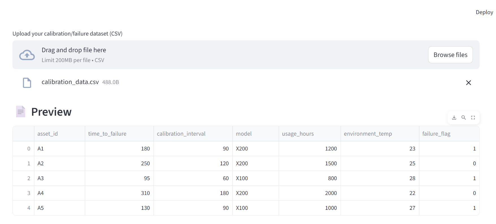
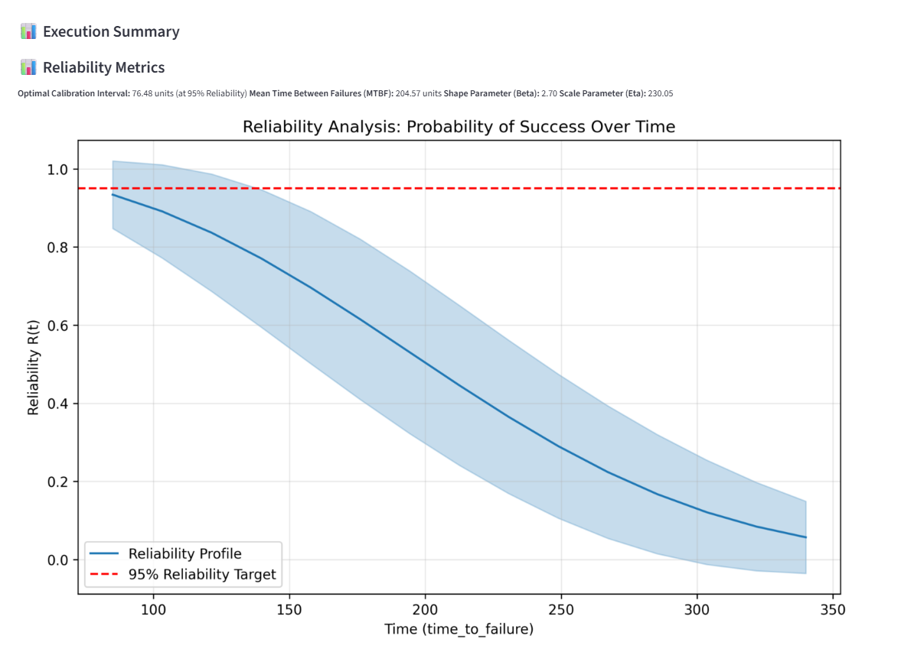

Project
AI Calibration Optimisation Agent
An AI agent that estimates optimal calibration intervals for industrial equipment by modelling failure probabilities with statistical reliability tools such as the Weibull distribution.
Overview
Industrial equipment often follows fixed calibration schedules that are not optimised for the true reliability profile of the system. This project explores how statistical reliability models can be used to dynamically estimate optimal calibration intervals, improving operational efficiency while maintaining high reliability standards.
The Problem
Many calibration schedules are based on conservative heuristics rather than data-driven reliability analysis, which can lead to:
- Unnecessary calibration costs
- Operational downtime
- Inefficient maintenance schedules
Methodology
The system models equipment reliability using tools such as Weibull reliability analysis. Shape (β) and scale (η) parameters are estimated from failure data to generate reliability curves over time.
- Weibull distribution modelling
- Reliability curve estimation
- Mean Time Between Failures (MTBF)
- Optimisation of intervals under reliability constraints

Results
The model produces a reliability curve that estimates the probability of successful operation over time and identifies the optimal calibration interval required to maintain a 95% reliability target.

How the Agent Works
The tool analyses the user's input and determines which tools are needed to accomplish the goal. It then writes the appropriate Python code, analyses the output, and delivers clear recommendations.
Potential Applications
This approach could be integrated into predictive maintenance systems to dynamically optimise schedules across healthcare technology, manufacturing, and industrial instrumentation.
This project was inspired by my internship at GE Healthcare, where I observed the data and processes first-hand and confirmed the potential of the solution. I have since completed IBM's "Build an AI Agent" course and plan to refine the project further.